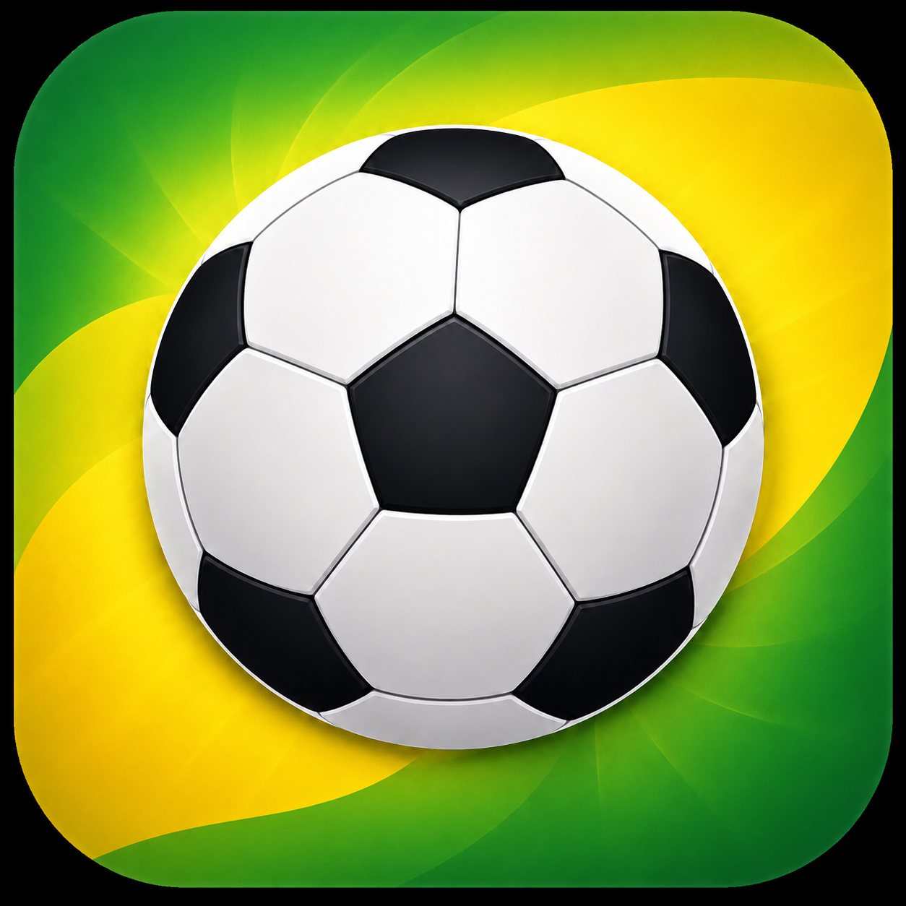

ACOMPANHADOR DA COPA 2026Jogos das suas seleções com placar e lance a lance ao vivo, lembretes, simulador de palpites, grupos e onde assistir cada partida. Tudo de graça, leve e direto ao ponto.
Cada recurso pensado para você não perder nada da competição.
Placar, minuto da partida, gols e cartões em tempo real. A tabela completa, jogo a jogo, no seu fuso horário.
Escolha os times que você torce e veja a agenda deles em destaque, com contagem regressiva para cada jogo.
Avisos antes do apito inicial e um resumo dos jogos do dia. Funciona offline, sem depender de internet.
Palpite os placares e veja a classificação dos grupos e o chaveamento mudarem na hora.
A tabela de cada grupo atualizada e o caminho até a final, sempre à mão.
O ranking de gols da competição, atualizado partida após partida.
Os canais que transmitem cada jogo, em um toque — para você nunca ficar na mão.
Os estádios e cidades-sede do torneio e um passeio pela história das edições anteriores.
Escolha entre vários ícones do app para deixar a tela inicial com a sua cara.
Espaços de anúncio integrados à experiência, sem poluir a navegação.
Abriu, usou. Sem login, sem senha, sem e-mail.
Feito para acompanhar todos os jogos, do primeiro apito à final.